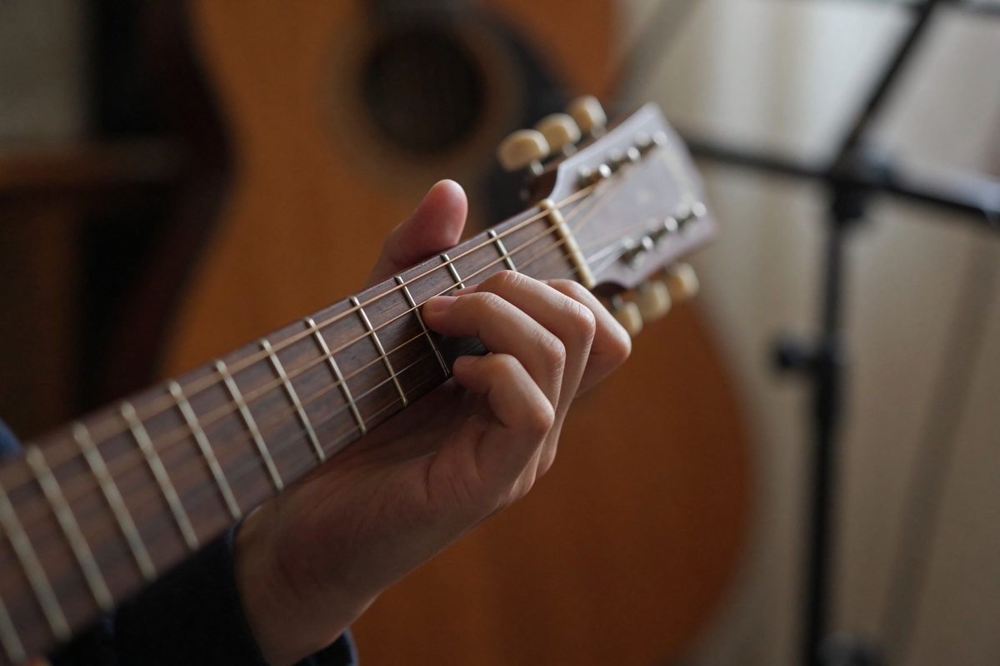

最近练的东西有点杂：一堆歌的前奏、几首能勉强弹唱的曲子，还有一本基础乐理。 看起来不像在学琴，倒像在攒零件。但练了一个多月，我发现这三件事其实是互相咬合的。

一、前奏：拆到不能再拆
前奏好听，也最容易练成“只会开头”。我现在的做法是： 一首前奏先拆成两到四小节，节拍器放到 60，右手先单独走一遍，确定每个音落在哪一拍上， 再加上左手。哪一小节卡住，就只练那一小节，不从头再来。
第二件事是接主歌。前奏练顺之后，一定紧接着弹主歌的第一句， 哪怕只弹一句。不然演出的时候，前奏结束那一刻会明显停一下，听起来像断了。
前奏不是独立的一段，它是在给主歌铺路。 练的时候就把下一句接上，比单独练十遍都有用。
下面这个视频是我最近对照的一段前奏讲解，分解和弦怎么落到每一拍上讲得很细， 我会把它当成“标准答案”，练完再录一遍自己的，对比差在哪：
B 站公开教学视频，仅作嵌入示例；换成自己的视频时改 bvid 即可。
二、弹唱：先把歌唱熟
弹唱卡住的人，多半不是手的问题，是嘴和手在抢同一份注意力。 我的顺序是：先把歌词唱到不用想，再边唱边用脚打拍，最后才把吉他加进来。
刚开始合的时候，和弦可以简化，节奏可以慢，但拍子不能乱。 唱和弹对不上是正常的，对上第一次之后，身体会自己记住那个感觉。 我一般一首歌拆成四段练：主歌、副歌各两段，每段循环十遍，再拼起来。
三、乐理：让记谱变省事
基础乐理一开始很枯燥，但学到和弦级数之后就值了。 知道一首歌是 1-4-5 还是 6-2-5-1，记谱就不用一个和弦一个和弦地背， 而是记一条走向；换把位、转调也有了依据，不用每次重新数格子。
我现在每天会留五分钟，只做一件事：在纸上写出正在练的那首歌的和弦级数， 标出根音在第几弦。写的时候慢，但下次看谱会快很多。
四、一天的练习怎么排
- 10 分钟爬格子，慢速，只求每个音干净。
- 15 分钟前奏，拆小节 + 接主歌第一句。
- 15 分钟弹唱，先唱熟再合，脚打拍。
- 5 分钟乐理，写级数、标根音。
每天四十五分钟，不多。练完录一段音，隔一周再听，能听出当时的毛病在哪里。 手指比脑子记得慢，但它一旦记住就不会忘。